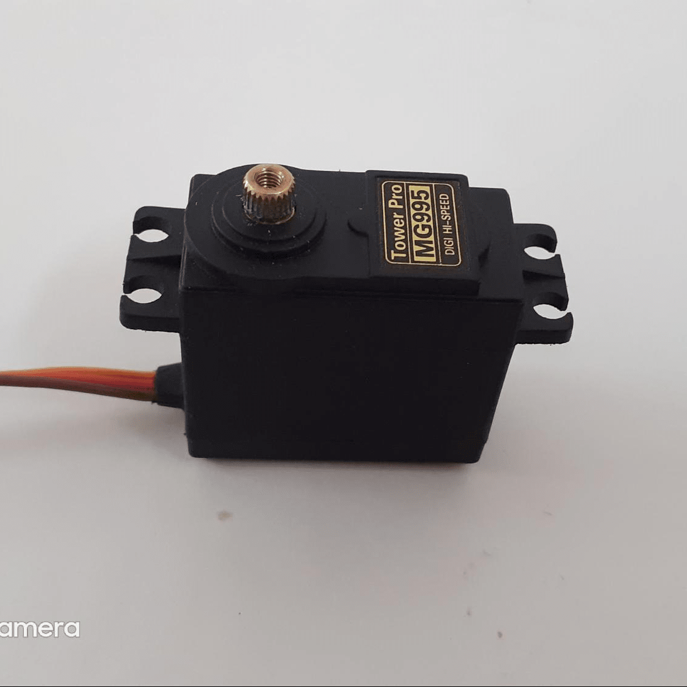
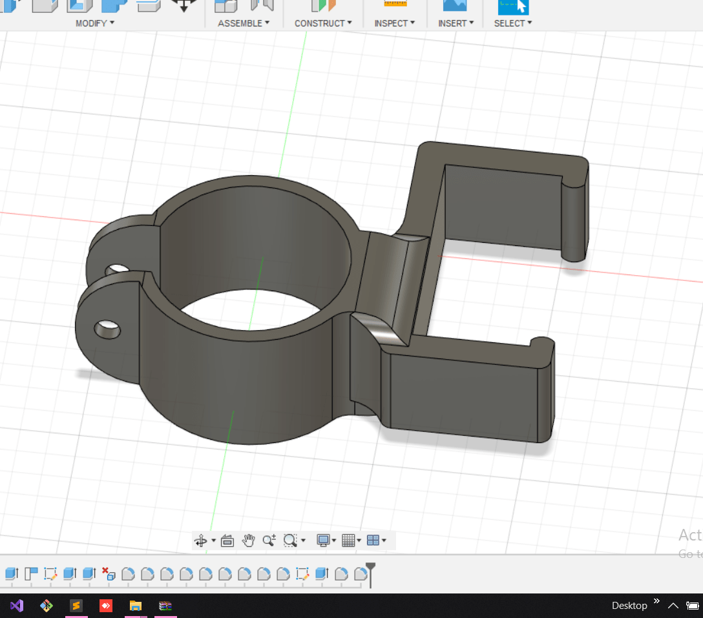
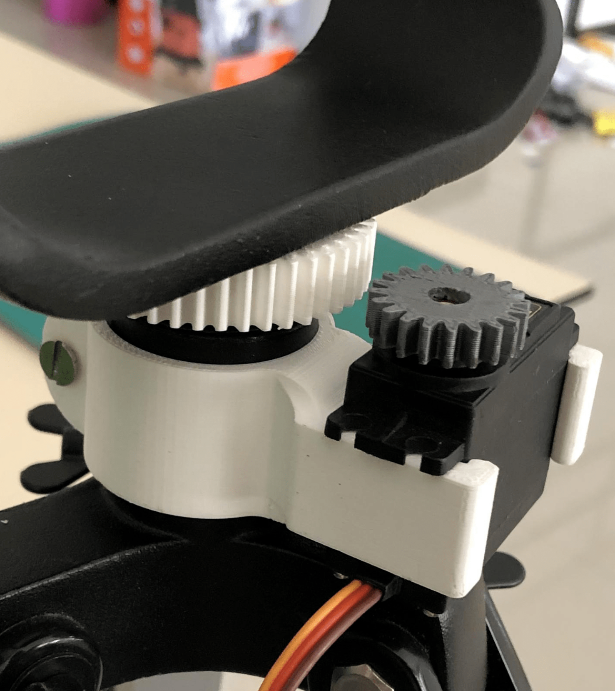

My stepper motors weren’t working due to low torque so I had to switch to Servo motors. Servo motors are very precise but most of them turn only 180 degrees. But luckily I had access to Tower Pro MG995. Those can rotate completely and are called 360 Servos.
After spending an hour in understanding how servos work and their codes, I started ideating on how I would attach this motor to the Azimuth mount. It took some time to come up with a design of another motor holder.
After 3D printing my holder, I had to attach the motor to it, which went well. But there was a fault in my design, my defined parameters of the distance between the motor and the mount were much larger than actual ones.
After this, I decided to make another gear instead of designing another holder, which went well and at the end the Azimuth mount was working!